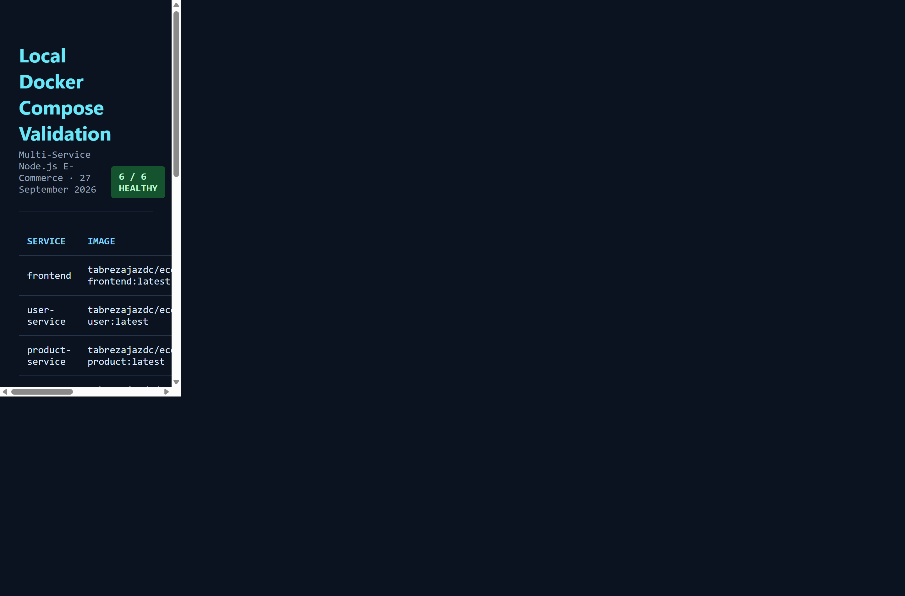
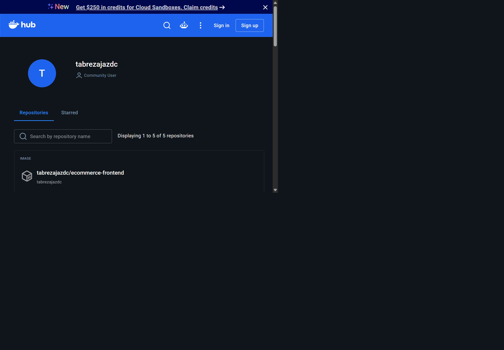
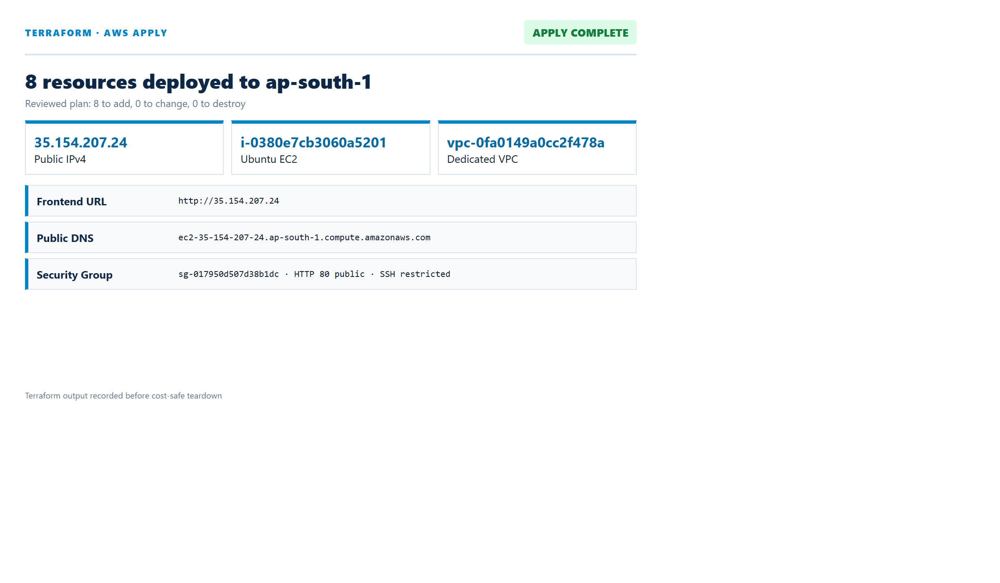
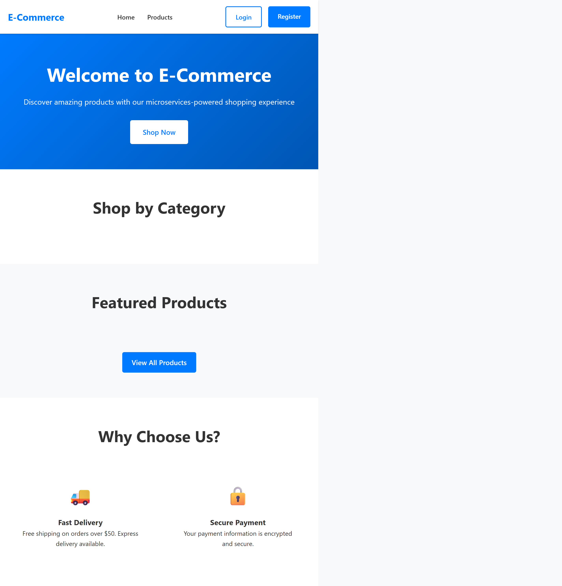
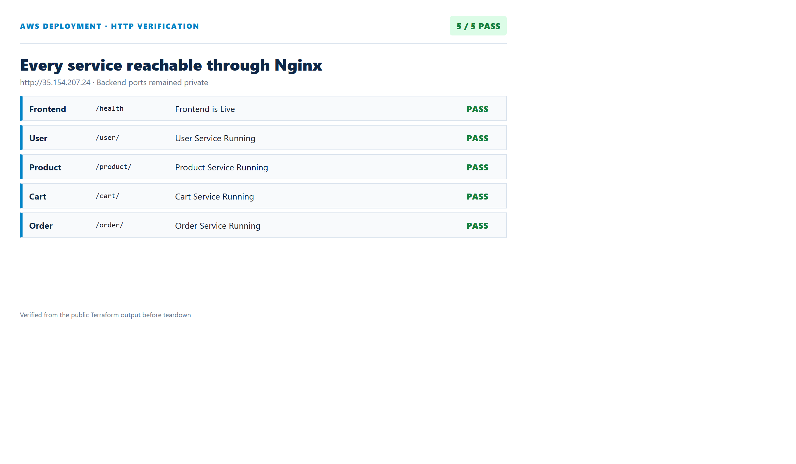
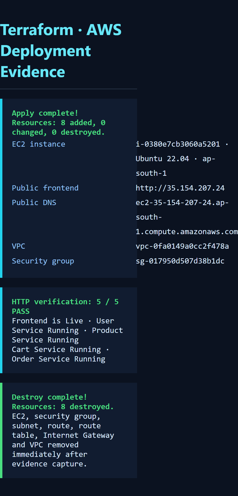
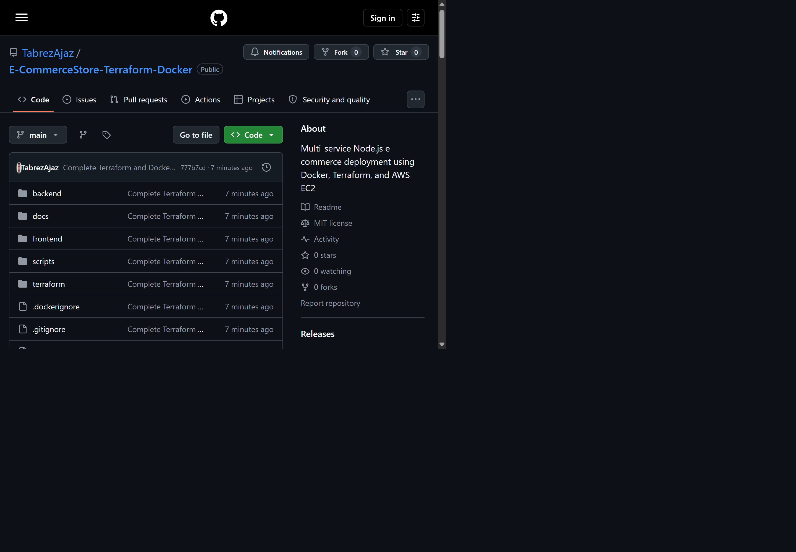

Deploy a Multi-Service Node.js E-Commerce Application Using Terraform and Docker
Five independently containerized services, public Docker Hub images, reproducible AWS infrastructure and automated EC2 deployment.
Abstract
This report documents the complete containerization and infrastructure automation of the prescribed AtharvaAI E-CommerceStore. Four Express/Mongoose backend services and one React frontend were packaged as separate Docker images, built and tested locally, and published publicly to Docker Hub. Terraform provisions a dedicated VPC, public subnet, Internet Gateway, route table, security group and Ubuntu EC2 host. EC2 user-data installs Docker, pulls all five images and starts the complete stack reproducibly.
1. Requirements Traceability
| Requirement | Implementation | Status |
|---|---|---|
| Five Dockerfiles | Four Node.js backend images and one multi-stage React/Nginx image | Complete |
| Relevant ports and sample responses | 3001-3004 internally; frontend 80; explicit service-running routes | Verified |
| Build/test locally | Health-gated Docker Compose and five HTTP smoke tests | Passed |
| Push to Docker Hub | Five public tabrezajazdc/ecommerce-* images | Published |
| VPC/public subnet/EC2/SG | Complete Terraform resources with restricted SSH and public HTTP | Implemented |
| Install/pull/run through user-data | Signed Docker repository, Compose plugin, image pull and health gate | Implemented |
| Terraform outputs | Frontend URL, public IP/DNS and all service health URLs | Implemented |
2. Architecture
HTTP :80
Frontend
:3001/:3002
:3003/:3004
:27017
Nginx is the only public entry point. It serves the React production build and reverse-proxies /user, /product, /cart and /order to service DNS names on a private Docker bridge network. No backend or database port is mapped to the EC2 host.
3. Containerization
| Image | Port | Response |
|---|---|---|
| ecommerce-user | 3001 | User Service Running |
| ecommerce-product | 3002 | Product Service Running |
| ecommerce-cart | 3003 | Cart Service Running |
| ecommerce-order | 3004 | Order Service Running |
| ecommerce-frontend | 80 | Frontend is Live |
PASS Frontend: Frontend is Live PASS User: User Service Running PASS Product: Product Service Running PASS Cart: Cart Service Running PASS Order: Order Service Running

4. Docker Hub Publication
The five verified images were pushed to the authenticated tabrezajazdc namespace. Public images allow EC2 user-data to deploy without registry credentials.

5. Terraform Infrastructure
- Dedicated
10.30.0.0/16VPC and10.30.1.0/24public subnet. - Internet Gateway, public route and route-table association.
- Ubuntu 22.04 EC2 with encrypted 20 GiB gp3 root volume and mandatory IMDSv2.
- Public port 80, administrator-only SSH, and self-referenced internal ports 3001-3004.
- User-data installs Docker, writes production Compose, pulls images and starts healthy containers.
terraform init terraform fmt -check -recursive terraform validate # Success! The configuration is valid.


6. Public Verification


7. Security and Cost Control
- Only the frontend gateway is publicly exposed.
- SSH is restricted to one administrator CIDR.
- Backend services run without host port mappings.
- JWT material is generated on-host and stored mode 0600.
- Terraform state, plans, variable values and secrets are excluded from Git.
- The short-lived EC2 deployment is destroyed immediately after evidence capture.

8. Submission
Source code, Dockerfiles, Compose configuration, Terraform, scripts, report and evidence are maintained at github.com/TabrezAjaz/E-CommerceStore-Terraform-Docker.
